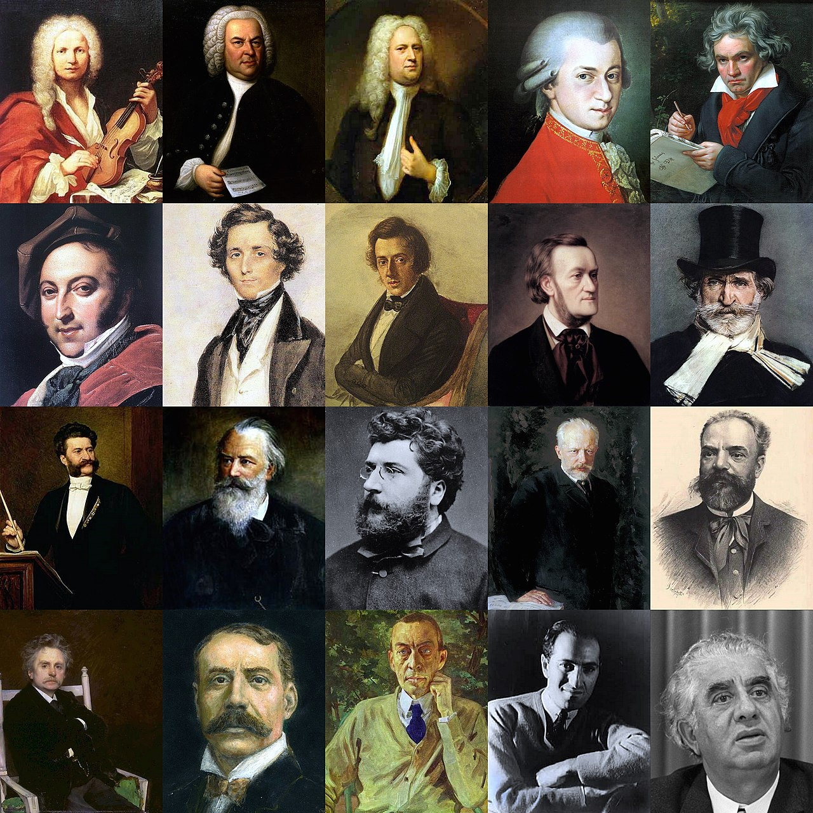

Классическая музыка


Исторический смысл
Исторически понятие «классическая музыка» (или «музыкальная классика») связано с эпохой классицизма, её поздним, просветительским этапом. Исходя из первоначального значения слова (лат. classicus — образцовый), драматурги эпохи классицизма за образец взяли сочинения античных авторов, дополнив принципы построения античной драмы, сформулированные в «Поэтике» Аристотеля, требованием соблюдения трёх единств: времени, места и действия. В музыке эти принципы могли быть реализованы только в опере, отчасти и в иных жанрах, связанных с литературными первоисточниками, — в оратории или кантате: широкое распространение, включая и реформаторские оперы К. В. Глюка (первого, кому удалось исполнить все требования классицизма), и многие сочинения «венских классиков», получили либретто, основанные на античных сюжетах. В отличие от литературы (в том числе драматургии) и изобразительного искусства, музыкальные традиции Древней Греции к XVIII веку были практически полностью утеряны (если не считать отголосков древней храмовой музыки в литургических песнопениях восточных церквей) и говорить о буквальном подражании классическим образцам в данном случае не приходится. Однако в инструментальной музыке нашли себе применение более общие принципы классицизма: требование равновесия, логической ясности замысла, стройности и законченности композиции и чёткого разграничения жанров. С этим требованием, предполагавшим строгую структурную упорядоченность — чёткую иерархию высшего и низшего, главного и второстепенного, центрального и подчинённого, было связано и постепенное вытеснение полифонии, господствовавшей ещё в эпоху раннего барокко, гомофонным складом, в инструментальной музыке окончательно утвердившимся во второй половине XVIII века. Сказывалось и влияние оперы: гомофонное письмо, разделившее голоса на главный и аккомпанирующие — в противовес полифоническому равноправию голосов, — оказалось более приспособлено для жанра музыкально-драматического; найденные в опере средства индивидуализации персонажей, передачи их эмоциональных состояний были восприняты и инструментальной музыкой. Развитие гомофонного письма, в свою очередь, способствовало становлению новых музыкальных форм, — представители позднего классицизма создавали свои собственные образцы: во второй половине XVIII века сложились основные жанры инструментальной музыки, сольной, ансамблевой и оркестровой, в том числе новые формы сонаты, инструментального концерта и симфонии. Наряду с унификацией и сведением к минимуму типов музыкальных форм в эпоху классицизма утвердился принцип единства тоники, прежде необязательный; появилась неизвестная прежней музыке категория темы (или главной темы) — концентрированного выражения мысли, начального тезиса, подлежащего дальнейшему развитию. Ещё в середине XVIII века составы оркестров были, как правило, случайными(не всегда); композиторское творчество оказывалось в прямой зависимости от наличного состава оркестра — чаще всего струнного, иногда с небольшим количеством духовых. Образование постоянных оркестров, их унификация во второй половине XVIII века способствовали становлению жанров симфонии и инструментального концерта, развитие которых сопровождалось поисками оптимального оркестрового состава, отбором и совершенствованием инструментов. Многообразные достижения композиторов эпохи классицизма — И. С. Баха и его сыновей, К. В. Глюка и итальянской оперы, ранней венской и мангеймской школ — нашли своё обобщение и завершение в так называемой венской классической школе, прежде всего в творчестве Й. Гайдна, В. А. Моцарта и Л. ван Бетховена. В сочинениях этих композиторов откристаллизовались «классические» формы сонаты, симфонии и инструментального концерта, а также различных камерных ансамблей — струнного и фортепианного трио, струнного квартета, квинтета и т. д.; к ним первоначально и было применено, уже в эпоху романтизма, понятие «музыкальная классика» или классика музыки, а именно «венская классика» (нем. Wiener Klassik), при том что конкретный музыкальный стиль, связанный с их именами, — лишь одно из течений в венской музыке эпохи классицизма, а позднее творчество Бетховена уже выходило за рамки этого направления. Связанное изначально с художественным направлением, понятие «венская классика» имело в то же время и оценочный смысл, как признание сочинений именно этих композиторов «образцовыми».